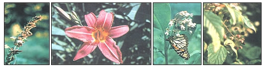

PHOTOS BY THE AUTHOR
from left: Amaranth Plant (Amaranthus species) , Day Lily (Hemerocallis fulva) , Milkweed (Asclepias syriaca) , Wild Blackberry (Rubus allegherniensis) ) The forageables pictured here were all gathered near Euell's house